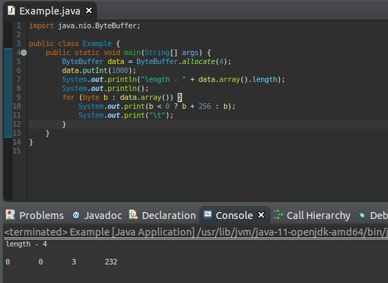

[Java スタディ - 21] IO(Input / Output)
こんにちは。明月です。
このページはJavaで使うIO(Input / Output)に関して調べてみました。
IOとは(Input / Output)の略語でただInputのキーボードとOutputのモニターの意味ではなく、ファイルのInputのファイル作る、ファイルのOutputのファイルを読込みのいみですね。
すなわち、プログラムでIOというのはファイルを扱うと意味になります。
一応、この「Input / Output」を理解するようには「Byte[]」配列と「Stream」に関して認知しなければならないです。
我々がプログラムで使うデータは結局、計算してどこかで格納するか、出力するか(印刷とか、モニターに結果を表示か)、どこかで通信してデータを渡すかになりますね。
そのデータをデータ化するようにはバイナリー形式に変換します。バイナリーとは機械が認識できるような2進ファイルですね。その2進ファイルの一つのデータがJavaでは「byte」形式になっています。
なので、バイナリーデータは「byte[]」配列になっています。
Javaで使うデータタイプでは「int」型があります。この「int」はすべて「4byte」になっていますね。「4byte」になっていることの意味では「int」型をバイナリーにすると「byte[4]」になります。

もし、上の「4byte」で順番が変わったり、「4byte」の[0]と[1]が「0」なので、省略しますと思うと、データが「1000」にならないですね。初めから「int」が「4byte」だから「2byte」で格納するとデータが「int」に戻れません。
なので、連続なデータの流れ、上のデータを「byte[]」単位の結ぶかたをプログラムでは「Stream」と言います。
「stream」は「I/O」と「Socket」通信などと関係がたくさんありますね。
テキストファイルをプログラム側に読込む時に「stream」形式で受け取るし、データをファイルに書出す時にも「stream」形式を利用します。

import java.io.File;
import java.io.FileInputStream;
public class Example {
public static void main(String[] args) {
try {
// ファイル情報をFileクラスで取得する。
File file = new File("/home/nowonbun/example/test.txt");
// データを扱うbyte[]タイプの変数を宣言する。
byte[] data = new byte[(int) file.length()];
// streamを割当てる。
FileInputStream stream = new FileInputStream(file);
// データ読込む
stream.read(data, 0, data.length);
// Streamは使用後で必ず「close」をしなければならないです。
stream.close();
// 出力
System.out.println(new String(data));
} catch (Throwable e) {
e.printStackTrace();
}
}
}

上の例をみれば、「FileInputStream」でファイルを読み込んで、コンソールに出力しました。結果は「test.txt」と同じ文言が出力しますね。
今回は逆にデータ内容をファイルに書出します。
import java.io.File;
import java.io.FileOutputStream;
public class Example {
public static void main(String[] args) {
try {
File file = new File("/home/nowonbun/example/test1.txt");
byte[] data = "テストです。".getBytes();
FileOutputStream stream = new FileOutputStream(file);
stream.write(data, 0, data.length);
stream.close();
} catch (Throwable e) {
e.printStackTrace();
}
}
}

上の例をみれば、すべて「stream.close()」の関数を呼出しています。なぜなら、「I/O」にはコネクションがありますが、それをちゃんと閉めてリソースを返却しなければならないですね。
そのためにありますが、もちろん「close」を忘れても「jvm」で自動に処理してくれますが、ちゃんとリソース返却がなれないとパフォーマンスが遅い理由になります。
もし、「close」を呼出す前に「Exception」が発生すれば、どのようになるか？
もちろん、「close」を呼び出せなかったので、リソースが残るままになりますね。そのため、ここで「try」キーワードを使えます。
import java.io.File;
import java.io.FileOutputStream;
public class Example {
public static void main(String[] args) {
try {
File file = new File("/home/nowonbun/example/test1.txt");
byte[] data = "テストです。".getBytes();
// { }の処理領域を外れたら自動に「close」が呼び出せます。
try (FileOutputStream stream = new FileOutputStream(file)) {
stream.write(data, 0, data.length);
}
} catch (Throwable e) {
e.printStackTrace();
}
}
}
上の「try ~ close」を使えるようには必ずクラスが「closeable」インタフェースを継承しなければならないです。
もちろん「try ~ catch ~ close ~ finally」の構文も使えますね。
- [Java スタディ - 37] 「Web spring framework」の「Controller」で「ajax」の要請する時「json」タイプで返却する方法2019/09/30 22:19:34
- [Java スタディ - 36] Spring web frameworkでControllerを使用する方法2019/09/27 20:39:09
- [Java スタディ - 35] EclipseでSpring web frameworkを利用してウェブサービスプロジェクトを立ち上がる方法2019/09/26 21:31:25
- [Java スタディ - 34] Web serviceプログラムのServletを作成方法(Eclipse)2019/09/25 19:58:30
- [Java スタディ - 33] 「Eclipse」でトムキャット(tomcat)を設定する方法2019/09/24 19:35:54
- [Java スタディ - 32] Mavenをインストール、使用方法、そしてeclipseに連結する方法2019/09/24 00:19:25
- [Java スタディ - 31] Reflection - Annotation編2019/09/20 22:34:40
- [Java スタディ - 30] Reflection - Variable編2019/09/19 20:20:10
- [Java スタディ - 29] Reflection - Method編2019/09/18 20:02:14
- [Java スタディ - 28] Reflection - Class編2019/09/17 20:22:02
- [Java スタディ - 27] ソケット(Socket)通信2019/09/16 23:42:46
- [Java スタディ - 26] アノテーション(annotation)2019/09/13 20:03:58
- [Java スタディ - 25] スレッドプール(ThreadPool)2019/09/13 00:58:31
- [Java スタディ - 24] スレッド(Thread)、同期化(synchronized)、デッドロック(deadlock)2019/09/11 23:06:09
- [Java スタディ - 23] Streamフィルタ式2019/09/10 21:55:36
- [Java スタディ - 37] 「Web spring framework」の「Controller」で「ajax」の要請する時「json」タイプで返却する方法2019/09/30 22:19:34
- [Java スタディ - 36] Spring web frameworkでControllerを使用する方法2019/09/27 20:39:09
- [Java スタディ - 35] EclipseでSpring web frameworkを利用してウェブサービスプロジェクトを立ち上がる方法2019/09/26 21:31:25
- [Java スタディ - 34] Web serviceプログラムのServletを作成方法(Eclipse)2019/09/25 19:58:30
- [Java スタディ - 33] 「Eclipse」でトムキャット(tomcat)を設定する方法2019/09/24 19:35:54
- [Java スタディ - 32] Mavenをインストール、使用方法、そしてeclipseに連結する方法2019/09/24 00:19:25
- [Java スタディ - 31] Reflection - Annotation編2019/09/20 22:34:40
- [Java スタディ - 30] Reflection - Variable編2019/09/19 20:20:10
- [Java スタディ - 29] Reflection - Method編2019/09/18 20:02:14
- [Java スタディ - 28] Reflection - Class編2019/09/17 20:22:02
- [Java スタディ - 27] ソケット(Socket)通信2019/09/16 23:42:46
- [Java スタディ - 26] アノテーション(annotation)2019/09/13 20:03:58
- [Java スタディ - 25] スレッドプール(ThreadPool)2019/09/13 00:58:31
- [Java スタディ - 24] スレッド(Thread)、同期化(synchronized)、デッドロック(deadlock)2019/09/11 23:06:09
- [Java スタディ - 23] Streamフィルタ式2019/09/10 21:55:36